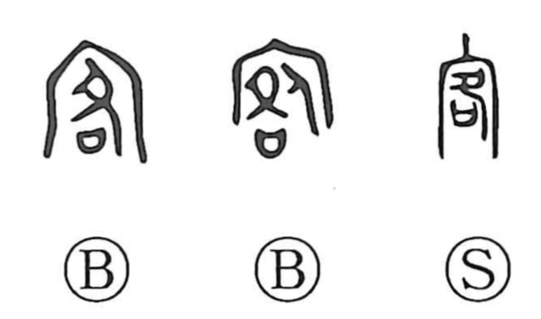

客

Kun: maroudo, tabibito | On: kyaku, kaku
guest ・ visitor ・ customer ・ traveler
Explanation
客 is a compound character formed from 宀 and 各. The宀 component depicts a great roof, the mitamaya—a mausoleum where ancestors are enshrined. 各 shows the act of presenting a sai, a ritual container that holds written prayers, and making supplication as the deities descend in response to the invitation. Together they portray a deity who comes down and enters the ancestral shrine: a god called in from outside, the “guest god” (kyakujin), known in Japan as maroudo, a deity of another clan. Over time the sacred sense broadened to human visitors, yielding meanings such as guest, customer, and traveler.